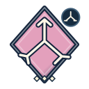
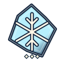
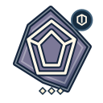
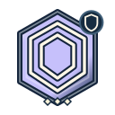
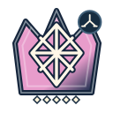

№ 01 · scarlet
Алый осколок
12 HP52 px/с3 ₡1 ♥
Без защиты
Обычный кристалл без защит: перехватывайте игольной башней на прямых участках.
Слои снаружи → внутрь
1. 5 HP+1 ₡
2. 7 HP+2 ₡
24 противника, HP, слои дохода и контрприёмы. Нажмите «Снять слой», чтобы увидеть смену цвета и ромбов оставшихся оболочек. Формы и значки различимы без цветового зрения.
Обычный кристалл без защит: перехватывайте игольной башней на прямых участках.
Быстрый бегун: размещайте скорострельные башни у поворотов, используйте замедление.
Очень быстрый и хрупкий: ловите ранним замедлением либо широкой зоной поражения.
Толстые оболочки, низкая скорость: помогает концентрированный урон на длинных секторах обстрела.
Умеренно быстрый и плотный: объединяйте точечные выстрелы с замедлением у поворота.
Первый энергетический щит: сначала пробейте щит усиленным уроном по щитам, затем снимайте слои.
Броня 8 ослабляет частые слабые удары: применяйте бронепробитие, shred и сильные выстрелы.
После гибели выпускает двух мошек: переключайте огонь на мелкие цели или бейте по площади.
Скрыт от башен без обнаружения: маяк или статус reveal раскрывает цель остальной защите.
Восстанавливает 4 HP/с, но выплаты не возобновляются: нужен постоянный урон или яд.
Щит 100 поглощает урон до начала оплачиваемых HP-слоёв: применяйте повышенный урон по щитам.

После гибели оставляет два алых осколка: готовьте добивание потомков атаками по площади.
Поглощает 50% огненного урона: используйте кинетику, холод или другое неогненное оружие.

Сопротивляется 50% холодного урона: добивайте кинетическим или огненным оружием.
Поглощает 50% электрического урона: используйте огненные и кинетические атаки.

Броня 20 почти гасит слабые удары: используйте бронепробитие, shred и мощные попадания.
Летающий разведчик обходит напольные ловушки: ставьте дальнобойные прямые атаки и замедление.
Мелкая одиночная цель: частые дешёвые выстрелы и атаки по площади справляются с роем.

Большой щит 300 требует концентрированного шквального урона по щитам: броня здесь не препятствие.
Броня 12 и два Дробящихся после смерти, затем четыре Алых: бронепробитие плюс атаки по площади.
Быстрый скрытый кристалл без брони: сначала обнаружение маяком, затем концентрированный огонь.

Пять оболочек; выпускает Королевского и двух Стеклянных с потомками: нужно пробитие и зачистка площади.
Огромные 1000 HP без иммунитета: удерживайте под перекрёстным огнём и усиливайте урон одной цели.
Элитный предбосс с бронёй, щитом, Королевским и двумя Стрелами после гибели: пробитие, контроль и добивание.